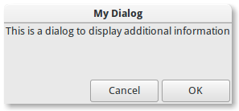
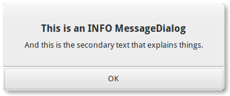
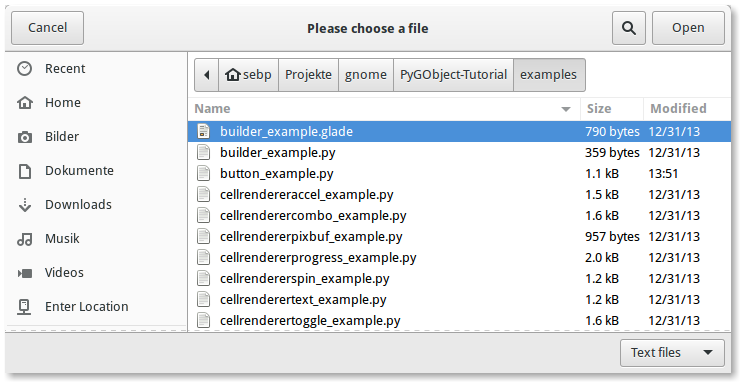

16. Dialogs¶
As janelas de caixa de diálogo são muito semelhantes às janelas padrão e são usadas para fornecer ou recuperar informações do usuário. Eles são frequentemente usados para fornecer uma janela de preferências, por exemplo. A principal diferença que uma caixa de diálogo tem é alguns widgets pré-empacotados que organizam a caixa de diálogo automaticamente. A partir daí, podemos simplesmente adicionar rótulos, botões, botões de verificação, etc. Outra grande diferença é o tratamento de respostas para controlar como o aplicativo deve se comportar após a interação com a caixa de diálogo.
Existem várias classes de diálogo derivadas que você pode achar útil. Gtk.MessageDialog é usado para notificações mais simples. Porém, em outras ocasiões, você pode precisar derivar sua própria classe de diálogo para fornecer uma funcionalidade mais complexa.
16.1. Dialogs Personalizados¶
Para empacotar widgets em um diálogo customizado, você deve empacotá-los no Gtk.Box, disponível via Gtk.Dialog.get_content_area(). Para adicionar apenas um Gtk.Button ao final do diálogo, você poderia usar o método Gtk.Dialog.add_button().
Um diálogo ‘modal’ (isto é, um que congela o resto do aplicativo da entrada do usuário), pode ser criado chamando Gtk.Dialog.set_modal no diálogo ou setando o argumento flags do o construtor Gtk.Dialog para incluir o sinalizador Gtk.DialogFlags.MODAL.
Clicar em um botão irá emitir um sinal chamado “response”. Se você quiser bloquear a espera de um diálogo para retornar antes do retorno do fluxo de controle para o seu código, você pode chamar Gtk.Dialog.run(). Este método retorna um int que pode ser um valor de Gtk.ResponseType ou pode ser o valor de resposta customizado que você especificou no construtor Gtk.Dialog ou Gtk.Dialog .add_button().
Finalmente, existem duas maneiras de remover um diálogo. O método Gtk.Widget.hide() remove a caixa de diálogo da visualização, mas mantém armazenada na memória. Isso é útil para evitar a necessidade de construir a caixa de diálogo novamente se precisar ser acessada posteriormente. Alternativamente, o método Gtk.Widget.destroy() pode ser usado para excluir o diálogo da memória, uma vez que não é mais necessário. Deve ser notado que se o diálogo precisar ser acessado depois de ter sido destruído, ele precisará ser construído novamente, caso contrário a janela de diálogo estará vazia.
16.1.1. Exemplo¶
1 2 3 4 5 6 7 8 9 10 11 12 13 14 15 16 17 18 19 20 21 22 23 24 25 26 27 28 29 30 31 32 33 34 35 36 37 38 39 40 41 42 43 44 45 46 | import gi
gi.require_version('Gtk', '3.0')
from gi.repository import Gtk
class DialogExample(Gtk.Dialog):
def __init__(self, parent):
Gtk.Dialog.__init__(self, "My Dialog", parent, 0,
(Gtk.STOCK_CANCEL, Gtk.ResponseType.CANCEL,
Gtk.STOCK_OK, Gtk.ResponseType.OK))
self.set_default_size(150, 100)
label = Gtk.Label("This is a dialog to display additional information")
box = self.get_content_area()
box.add(label)
self.show_all()
class DialogWindow(Gtk.Window):
def __init__(self):
Gtk.Window.__init__(self, title="Dialog Example")
self.set_border_width(6)
button = Gtk.Button("Open dialog")
button.connect("clicked", self.on_button_clicked)
self.add(button)
def on_button_clicked(self, widget):
dialog = DialogExample(self)
response = dialog.run()
if response == Gtk.ResponseType.OK:
print("The OK button was clicked")
elif response == Gtk.ResponseType.CANCEL:
print("The Cancel button was clicked")
dialog.destroy()
win = DialogWindow()
win.connect("destroy", Gtk.main_quit)
win.show_all()
Gtk.main()
|
16.2. MessageDialog¶
Gtk.MessageDialog é uma classe de conveniência, usada para criar diálogos de mensagem simples e padrão, com uma mensagem, um ícone e botões para resposta do usuário. Você pode especificar o tipo de mensagem e o texto no construtor Gtk.MessageDialog, além de especificar botões padrão.
Em alguns diálogos que requerem alguma explicação adicional do que aconteceu, um texto secundário pode ser adicionado. Nesse caso, a mensagem principal inserida ao criar a caixa de diálogo da mensagem é maior e definida como texto em negrito. A mensagem secundária pode ser definida chamando Gtk.MessageDialog.format_secondary_text().
16.2.1. Exemplo¶
1 2 3 4 5 6 7 8 9 10 11 12 13 14 15 16 17 18 19 20 21 22 23 24 25 26 27 28 29 30 31 32 33 34 35 36 37 38 39 40 41 42 43 44 45 46 47 48 49 50 51 52 53 54 55 56 57 58 59 60 61 62 63 64 65 66 67 68 69 70 71 72 73 74 75 76 77 78 | import gi
gi.require_version('Gtk', '3.0')
from gi.repository import Gtk
class MessageDialogWindow(Gtk.Window):
def __init__(self):
Gtk.Window.__init__(self, title="MessageDialog Example")
box = Gtk.Box(spacing=6)
self.add(box)
button1 = Gtk.Button("Information")
button1.connect("clicked", self.on_info_clicked)
box.add(button1)
button2 = Gtk.Button("Error")
button2.connect("clicked", self.on_error_clicked)
box.add(button2)
button3 = Gtk.Button("Warning")
button3.connect("clicked", self.on_warn_clicked)
box.add(button3)
button4 = Gtk.Button("Question")
button4.connect("clicked", self.on_question_clicked)
box.add(button4)
def on_info_clicked(self, widget):
dialog = Gtk.MessageDialog(self, 0, Gtk.MessageType.INFO,
Gtk.ButtonsType.OK, "This is an INFO MessageDialog")
dialog.format_secondary_text(
"And this is the secondary text that explains things.")
dialog.run()
print("INFO dialog closed")
dialog.destroy()
def on_error_clicked(self, widget):
dialog = Gtk.MessageDialog(self, 0, Gtk.MessageType.ERROR,
Gtk.ButtonsType.CANCEL, "This is an ERROR MessageDialog")
dialog.format_secondary_text(
"And this is the secondary text that explains things.")
dialog.run()
print("ERROR dialog closed")
dialog.destroy()
def on_warn_clicked(self, widget):
dialog = Gtk.MessageDialog(self, 0, Gtk.MessageType.WARNING,
Gtk.ButtonsType.OK_CANCEL, "This is an WARNING MessageDialog")
dialog.format_secondary_text(
"And this is the secondary text that explains things.")
response = dialog.run()
if response == Gtk.ResponseType.OK:
print("WARN dialog closed by clicking OK button")
elif response == Gtk.ResponseType.CANCEL:
print("WARN dialog closed by clicking CANCEL button")
dialog.destroy()
def on_question_clicked(self, widget):
dialog = Gtk.MessageDialog(self, 0, Gtk.MessageType.QUESTION,
Gtk.ButtonsType.YES_NO, "This is an QUESTION MessageDialog")
dialog.format_secondary_text(
"And this is the secondary text that explains things.")
response = dialog.run()
if response == Gtk.ResponseType.YES:
print("QUESTION dialog closed by clicking YES button")
elif response == Gtk.ResponseType.NO:
print("QUESTION dialog closed by clicking NO button")
dialog.destroy()
win = MessageDialogWindow()
win.connect("destroy", Gtk.main_quit)
win.show_all()
Gtk.main()
|
16.3. FileChooserDialog¶
O Gtk.FileChooserDialog é adequado para uso com itens de menu “Arquivo/Abrir” ou “Arquivo/Salvar”. Você pode usar todos os métodos Gtk.FileChooser no diálogo do seletor de arquivos, assim como aqueles para Gtk.Dialog.
Ao criar um Gtk.FileChooserDialog você precisa definir o propósito do diálogo:
- Para selecionar um arquivo para abertura, como para um comando Arquivo/Abrir, use
Gtk.FileChooserAction.OPEN- Para salvar um arquivo pela primeira vez, como para um comando Arquivo/Salvar, use
Gtk.FileChooserAction.SAVEe sugira um nome como “Untitled”comGtk.FileChooser.set_current_name().- Para salvar um arquivo com um nome diferente, como para um comando Arquivo/Salvar como, use
Gtk.FileChooserAction.SAVEe defina o nome do arquivo existente comoGtk.FileChooser.set_filename().- Para escolher uma pasta em vez de um arquivo, use
Gtk.FileChooserAction.SELECT_FOLDER.
Gtk.FileChooserDialog herda de Gtk.Dialog, então os botões possuem IDs de resposta como Gtk.ResponseType.ACCEPT e Gtk.ResponseType.CANCEL, que pode ser especificado no construtor Gtk.FileChooserDialog. Em contraste com Gtk.Dialog, você não pode usar códigos de resposta customizados com Gtk.FileChooserDialog. Espera que pelo menos um botão tenha os seguintes IDs de resposta:
Quando o usuário terminar de selecionar arquivos, seu programa pode obter os nomes selecionados como nomes de arquivos (Gtk.FileChooser.get_filename()) ou como URIs (Gtk.FileChooser.get_uri()).
Por padrão, Gtk.FileChooser permite apenas que um único arquivo seja selecionado por vez. Para permitir que vários arquivos sejam selecionados, use Gtk.FileChooser.set_select_multiple(). Recuperar uma lista de arquivos selecionados é possível com Gtk.FileChooser.get_filenames() ou Gtk.FileChooser.get_uris().
Gtk.FileChooser também suporta uma variedade de opções que tornam os arquivos e pastas mais configuráveis e acessíveis.
Gtk.FileChooser.set_local_only(): Somente arquivos locais podem ser selecionados.Gtk.FileChooser.show_hidden(): arquivos e pastas ocultos são exibidos.Gtk.FileChooser.set_do_overwrite_confirmation(): Se o seletor de arquivos foi configurado no modoGtk.FileChooserAction.SAVE, ele apresentará um diálogo de confirmação se o usuário digitar um nome de arquivo que já existe.
Além disso, você pode especificar quais tipos de arquivos são exibidos criando objetos Gtk.FileFilter e chamando Gtk.FileChooser.add_filter(). O usuário pode selecionar um dos filtros adicionados em uma caixa de combinação na parte inferior do seletor de arquivos.
16.3.1. Exemplo¶
1 2 3 4 5 6 7 8 9 10 11 12 13 14 15 16 17 18 19 20 21 22 23 24 25 26 27 28 29 30 31 32 33 34 35 36 37 38 39 40 41 42 43 44 45 46 47 48 49 50 51 52 53 54 55 56 57 58 59 60 61 62 63 64 65 66 67 68 69 70 71 72 73 | import gi
gi.require_version('Gtk', '3.0')
from gi.repository import Gtk
class FileChooserWindow(Gtk.Window):
def __init__(self):
Gtk.Window.__init__(self, title="FileChooser Example")
box = Gtk.Box(spacing=6)
self.add(box)
button1 = Gtk.Button("Choose File")
button1.connect("clicked", self.on_file_clicked)
box.add(button1)
button2 = Gtk.Button("Choose Folder")
button2.connect("clicked", self.on_folder_clicked)
box.add(button2)
def on_file_clicked(self, widget):
dialog = Gtk.FileChooserDialog("Please choose a file", self,
Gtk.FileChooserAction.OPEN,
(Gtk.STOCK_CANCEL, Gtk.ResponseType.CANCEL,
Gtk.STOCK_OPEN, Gtk.ResponseType.OK))
self.add_filters(dialog)
response = dialog.run()
if response == Gtk.ResponseType.OK:
print("Open clicked")
print("File selected: " + dialog.get_filename())
elif response == Gtk.ResponseType.CANCEL:
print("Cancel clicked")
dialog.destroy()
def add_filters(self, dialog):
filter_text = Gtk.FileFilter()
filter_text.set_name("Text files")
filter_text.add_mime_type("text/plain")
dialog.add_filter(filter_text)
filter_py = Gtk.FileFilter()
filter_py.set_name("Python files")
filter_py.add_mime_type("text/x-python")
dialog.add_filter(filter_py)
filter_any = Gtk.FileFilter()
filter_any.set_name("Any files")
filter_any.add_pattern("*")
dialog.add_filter(filter_any)
def on_folder_clicked(self, widget):
dialog = Gtk.FileChooserDialog("Please choose a folder", self,
Gtk.FileChooserAction.SELECT_FOLDER,
(Gtk.STOCK_CANCEL, Gtk.ResponseType.CANCEL,
"Select", Gtk.ResponseType.OK))
dialog.set_default_size(800, 400)
response = dialog.run()
if response == Gtk.ResponseType.OK:
print("Select clicked")
print("Folder selected: " + dialog.get_filename())
elif response == Gtk.ResponseType.CANCEL:
print("Cancel clicked")
dialog.destroy()
win = FileChooserWindow()
win.connect("destroy", Gtk.main_quit)
win.show_all()
Gtk.main()
|